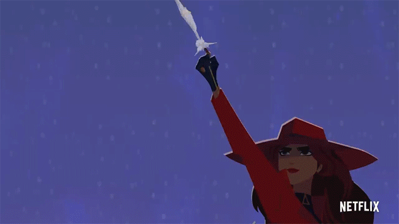

Agent Information
Carmen Sandiego, raised in an island near the Spanish waters by VILE Academy founders, was originally found by Shadow San in Buenos Aires, Argentina. Upon graduation, she has changed sides and decided to only steal from thieves. At least, that is what intel indicates...
Carmen Sandiego escapes again!
Carmen's Partners in Crime
- Player
- Ivy
- Zack
- Shadow San
Carmen's Latest Whereabouts
Updated every hour from ACME's location tracker server. Click on each link to see specific location.